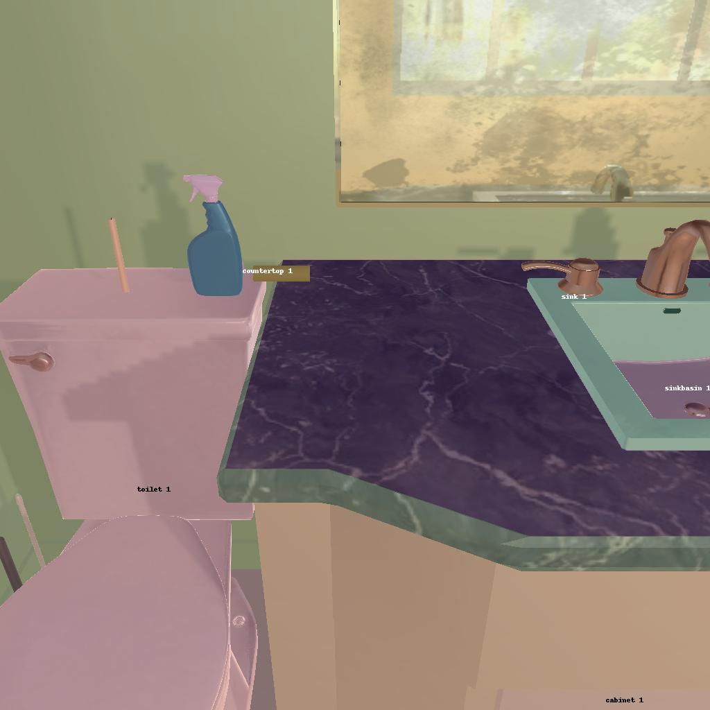

---------------------------------------------------------task: 11---------------------------------------------------------
--------------------------------------------------------------------------------------------------------------------------------------------------------------------
--------------------------------------------------------------------------------------------------------------------------------------------------------------------
Step:--------------------------------------------------------------------------1-------------------------------------------------------------------------------
----------------------------------------
VLM Prompt:
Image1:
Image2:
**Instruction**
1. Analyze the provided image to identify all visible household objects, focusing on those relevant to the task description "clean some soapbar and put it in bathtubbasin."
2. Use the analysis of the image and the task hint "The agent must find an object of the desired type, pick it up, go to a sink or a basin, clean the object with a sink or basin, and then find the correct location to place it and put it down there. The agent does not need to use soap bottle or faucet to clean the object, and the agent just needs to do action that is "clean the object with the sink or sink basin"." to answer the question: what is the most reasonable action in the choices for the task description "clean some soapbar and put it in bathtubbasin"?
4. Decide and write the answer using the template: The answer is: (i): , where i is the real number. If there is no desired object in the image, search every place based on **Initial Observation** to find the object. And if no one is exactly correct, choose a similar answer.
**Initial Observation**
You are in the middle of a room. Looking quickly around you, you can see bathtub (1), bathtubbasin (1), toilet (1), cabinet (1-2), countertop (1), sink (1), sinkbasin (1), garbagecan (1)
**Answer Choices**
(1): go to bathtub 1
(2): go to bathtubbasin 1
(3): go to toilet 1
(4): go to cabinet 1
(5): go to countertop 1
(6): go to sink 1
(7): go to sinkbasin 1
(8): go to cabinet 2
(9): go to garbagecan 1
**Answer**
Let's think step by step by following the instructions.
----------------------------------------
----------------------------------------
Original Response:
First, we need to identify all visible household objects relevant to the task description "clean some soapbar and put it in bathtubbasin." In the image, we can see a sink (labeled as "sink 1") and a sink basin (labeled as "sinkbasin 1"), which could be used to clean the soapbar. We also see a countertop (labeled as "countertop 1") and a cabinet (labeled as "cabinet 1").
However, there is no soapbar visible in the images provided. Therefore, we must search every place based on the Initial Observation to find the object. The most reasonable location to find a soapbar would be in the cabinet where such items are typically stored. Since we only see "cabinet 1" in the image and the Initial Observation mentions "cabinet (1-2)," we have two options to choose from: "go to cabinet 1" or "go to cabinet 2." Since "cabinet 1" is visible and we cannot see "cabinet 2" in the image, it is more reasonable to check the visible cabinet first.
After obtaining the soapbar, the next step would be to clean it. Since the agent does not need to use soap or a faucet and just needs to do the action "clean the object with the sink or sink basin," the agent should go to either "sink 1" or "sinkbasin 1" to perform the cleaning action.
Finally, the task description states to put the cleaned soapbar in the "bathtubbasin," so the last action would be to go to "bathtubbasin 1" to complete the task.
Based on the analysis, the most reasonable sequence of actions would be to first find the soapbar in the cabinet, then clean it in the sink or sink basin, and finally place it in the bathtub basin. Since the task is to first clean the soapbar, we should choose the action that involves cleaning. Between the sink and the sink basin, it is more common to clean objects in the sink basin. Therefore, the most reasonable action to choose is:
The answer is: (7): go to sinkbasin 1.
----------------------------------------
----------------------------------------
>>> Refine Original VLM Response and Get Pure Action: go to sinkbasin 1
----------------------------------------
-----------------------------------------------------------------
Running time: 13.57459020614624 seconds
Total Money: 6.357460000000001
-----------------------------------------------------------------
-----------------------------------------------------------------
Text Observation:You arrive at loc 6. On the sinkbasin 1, you see a faucet 1, and a faucet 2.
-----------------------------------------------------------------
UNSUCCEED